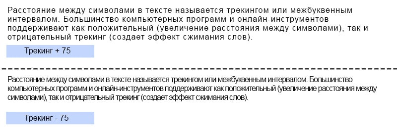
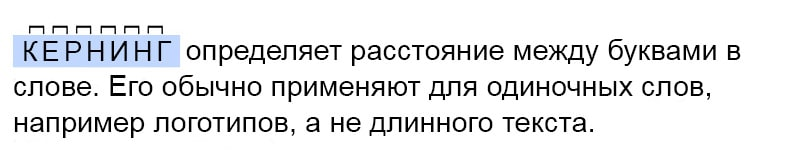

Что такое типографика: основы и правила
Сегодня типографику можно встретить повсюду: на сайтах, уличных афишах, упаковке еды, рекламных постерах, видеороликах, книгах. Она стала неотъемлемой частью брендинга.
Что же такое типографика?
Говоря простым языком, типографика — это визуальное оформление текста. Это один из самых важных элементов композиции — и в цифровом и в печатном формате.
Научиться красиво и эффективно оформлять текст может каждый. В данном руководстве по основам типографики мы собрали для вас главные приемы и правила типографики. Надеемся, оно поможет вам усовершенствовать свои навыки и создать визуальные материалы, которые впечатлят вашу аудиторию.
Что такое типографика?
Оформление печатных символов в визуально привлекательный и разборчивый текст называется типографикой. Само слово происходит от греческого “типос” — отпечаток и “графо” — пишу.
Типографика известна с 11 века, однако само искусство существовало и ранее, во времена, когда книги и газеты издавались без каких-либо технических средств. Каждая деталь тщательно продумывалась, разрабатывалась и выводилась на бумаге.
В эпоху интернета и цифровизации типографика расширила свое влияние и стала видной составляющей не только в издательстве, но и во всех сферах жизни.
Перед тем, как перейти к основным видам гарнитуры, нужно определить разницу между шрифтом и гарнитурой. Их часто используют в одном смысле. Но гарнитура — это набор шрифтов и их видов, в то время как шрифт — это один из стилей, включенных в гарнитуру. Короче говоря, гарнитура — это совокупность различных шрифтов.
Например, Corbel — это гарнитура, которая включает Corbel Light, Corbel Bold Italic, Corbel Light Italic и другие шрифты
- Corbel font
- Corbel
- Corbel bold
- Corbel italic
- Corbel bold italic
Существует четыре основных видов гарнитуры: антиква, гротеск, рукописная и акцидентная. Разберем их по отдельности.
Антиква
Данная гарнитура, известная также как гуманистический стиль, является начертанием с засечками. Этот вид гарнитуры был вдохновлен традиционной каллиграфией, и считается одним из самых известных и старых стилей. Согласно некоторым источникам, антиква появилась в 15 веке.
Гарнитуры с засечками считаются более формальными, поэтому их можно встретить в газетах, книгах и журналах.
Их можно изменить, поэтому многие гарнитуры включают начертание курсивом и жирным, низкую капитализацию и другие стили.
Несмотря на то, что антиква отличается маленькими засечками в конце букв, у нее есть много вариаций. Одна из самых известных — Times New Roman.
Гротеск
Гарнитура гротеск начала пользоваться популярностью с середины 20 века, и имеет более готический вид, в то время, как антиква считается “римским” стилем.
Символы данного вида гарнитуры более четкие, жирные и современные. Известным примером такой гарнитуры является Arial, который часто встречается в заголовках и объявлениях.
Рукописная
Этот вид с изящными изгибами самый элегантный и художественный. Он появился в середине 20 века и обычно выглядит как рукописное письмо.
Существует множество вариаций этой гарнитуры, некоторые из них даже сложно разобрать, поэтому использовать их следует с осторожностью, несмотря на всю их красоту. Всегда стоит иметь в виду, смогут ли пользователи его прочесть, особенно, если вы выбираете шрифт для логотипа своего бренда.
Акцидентная
Шрифты акцидентной гарнитуры забавные, неформальные и оригинальные. Их обычно используют в коротких текстах, например заголовках.
Многие бренды используют данную гарнитуру в дизайне логотипа. Два ярких примера логотипов, выполненных с акцидентной гарнитурой, — Disney и Fanta.
Disney
Трекинг
Расстояние между символами в тексте называется трекингом или межбуквенным интервалом. Большинство компьютерных программ и онлайн-инструментов поддерживают как положительный (увеличение расстояния между символами), так и отрицательный трекинг (создает эффект сжимания слов). Постарайтесь придерживаться баланса при определении трекинга, чтобы ваш проект выглядел креативно и в то же время профессионально.
Кернинг
отличие от трекинга, который является расстоянием между текстовыми символами, кернинг определяет расстояние между буквами в слове. Его обычно применяют для одиночных слов, например логотипов, а не длинного текста. Если вы применили трекинг, а между некоторыми буквами сохранился пробел, примените инструмент кернинга, чтобы скорректировать его. Если вы придумали текстовой логотип из одного слова, вы можете использовать кернинг, чтобы сделать буквы более отчетливыми, увеличив расстояние между ними.
Выравнивание
Выравнивание текста — придание одинакового расстояния и размера между всеми элементами текста. Вы можете выбрать из нескольких вариантов: выравнивание по левому краю, по правому краю, по центру или по ширине. Выравнивание по левому краю — самый оптимальный вариант, так как визуально он самый легкий для чтения.
А самым сложным видом считается выравнивание по ширине. Выравнивание по ширине выравнивает текст как по левому, так и по правому краю, и часто искажает расстояние между символами. Так что при работе с текстом его лучше не использовать.
По левому краю
Текст выравнивается слева
По правому краю
Текст выравнивается справа
По центру
Текст выравнивается по центру
По ширине
Текст выравнивается по ширине Текст выравнивается по ширинеТекст выравнивается по ширинеТекст выравнивается по ширинеТекст выравнивается по ширинеТекст выравнивается по ширинеТекст выравнивается по ширинеТекст выравнивается по ширинеТекст выравнивается по ширинеТекст выравнивается по ширинеТекст выравнивается по ширинеТекст выравнивается по ширинеТекст выравнивается по ширинеТекст выравнивается по ширинеТекст выравнивается по ширине Текст выравнивается по ширине Текст выравнивается по ширине Текст выравнивается по ширине Текст выравнивается по ширине